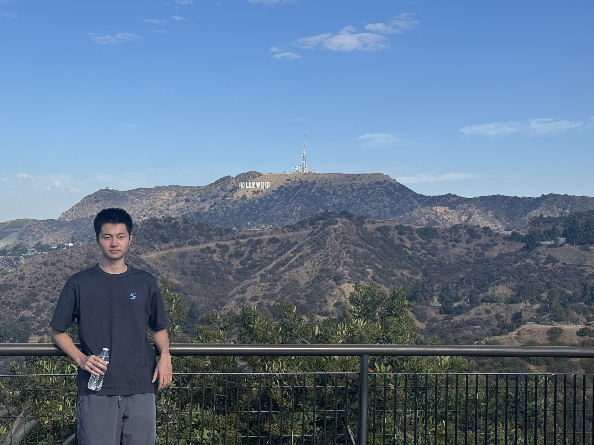
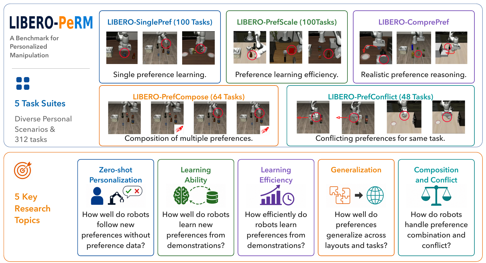

Keqian Tang.
Research in robotics.
Learning to act, adapting to people.
Research
01LIBERO-PeRM: Benchmarking Personalized Robotic Manipulation
NeurIPS 2026 Evaluations and Datasets Track

A benchmark for learning user preferences in robotic manipulation, with 312 tasks across five suites. It evaluates both task completion and preference satisfaction, covering motion, skill, and user-profile preferences.
Education
02Tsinghua University
2022 — 2026Undergraduate · Department of Automation